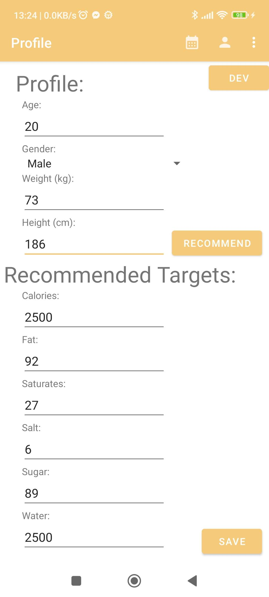
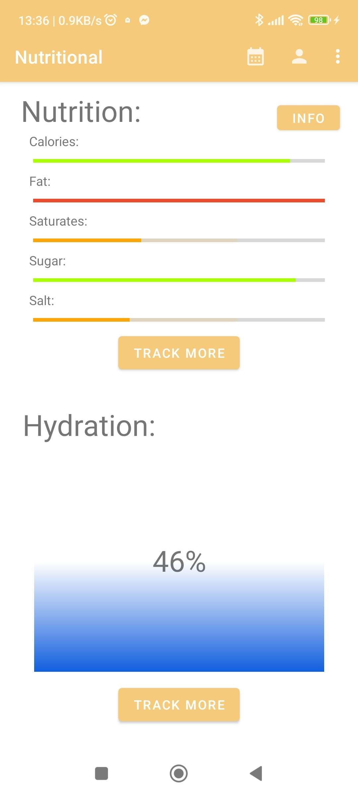
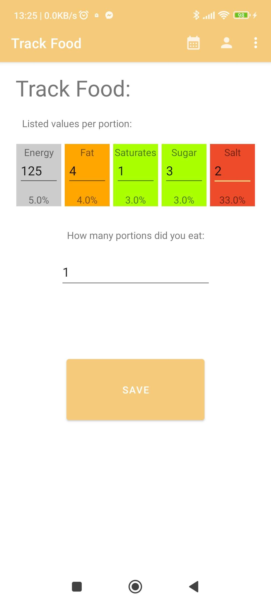
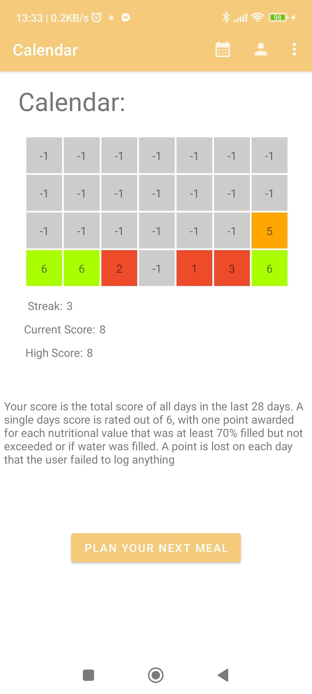
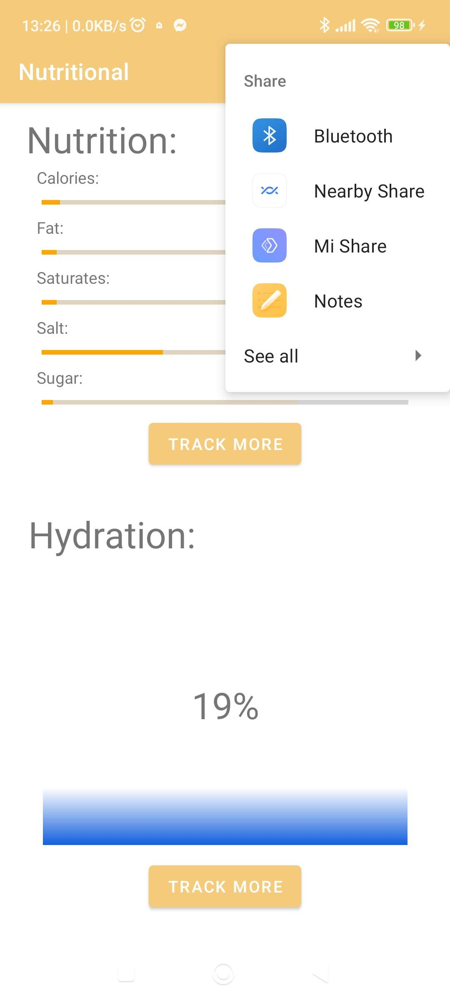
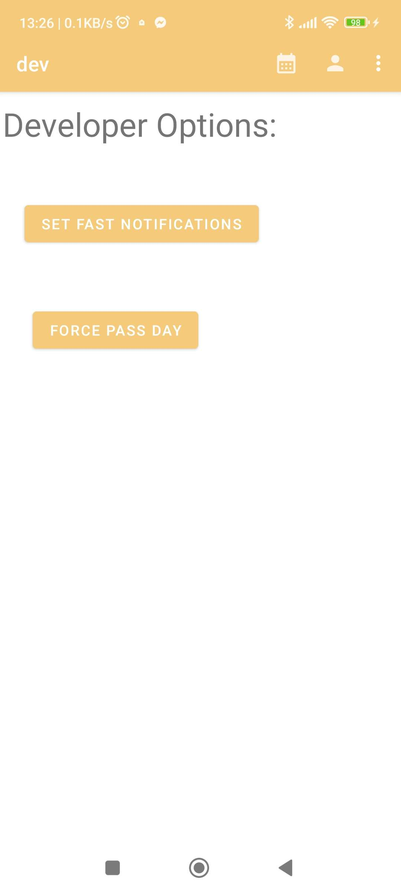

This app is designed to make it easier for users to track their dietary and water intakes. It allows the user to enter their details in the profile and generate goals for them based on the UK governments guidelines. These goals can be adjusted manually if the user wishes to do so.
The home screen shows the users logged values so far and allows the user to track new items by pressing either of the "track more" buttons. Additionally the taskbar at the top allows the user to navigate easily to the calendar or profile, or to use the share action
The user is able to track new food intake by pressing the relevant button on the home screen. Here they can enter the relevant values in a format similar to that found on most conventional food items. The graphic will change to reflect the UK health guidelines and the traffic light standard. The user can then enter how many portions of the entered food they have eaten. When the user presses save the information is saved and shown in the Home screen.
When tracking water the user will instead use the interactive drag/swipe functionality to select the quantity of water they have consumed.
A user may see their past records by visiting the Calendar. The Calendar displays the last 28 days and the points that the user scored on that day. This page also displays statistics such as the users current score, highscore and streak. From here the user is also able to plan meals by pressing the button to open whe calendar app where they can choose a day and write details for their food.
Should a user wish to do so, they can share their score by using the share function on the apps taskbar.
For ease of testing and for the purposes of this demonstration I have added a developer page to the profile. Here it is possible to set the apps notifications to go off much faster, rather than every few hours, or to manually pass a day.
